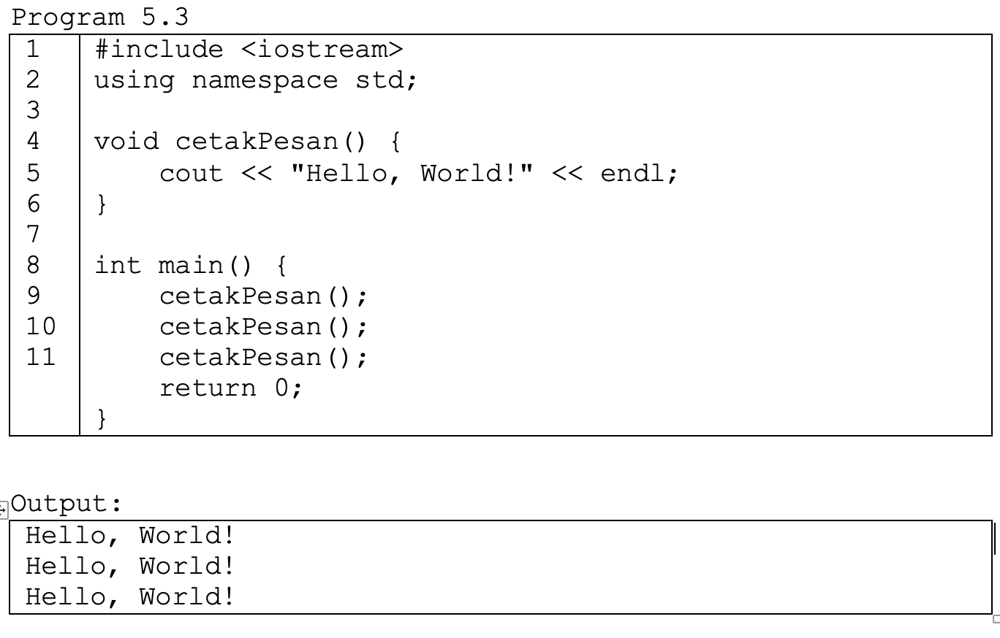

Fungsi void adalah fungsi yang tidak mengembalikan nilai apapun setelah selesai menjalankan tugasnya. Kata kunci void digunakan untuk mendeklarasikan jenis fungsi ini. Fungsi void sering digunakan untuk melakukan aksi tertentu, seperti mencetak output, memodifikasi variabel global, atau melakukan operasi input/output lainnya. Berikut contoh programnya!
Dalam contoh ini, fungsi cetakPesan adalah fungsi void yang hanya mencetak pesan ke layar dan tidak mengembalikan nilai apapun. fungsi ini dipanggil sebanyak 3 kali, sehingga output dari program ini adalah tulisan Hello, World sebanyak 3 baris.